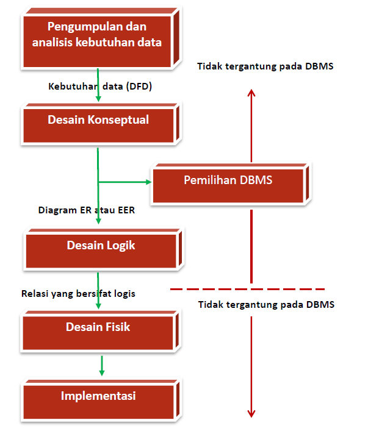
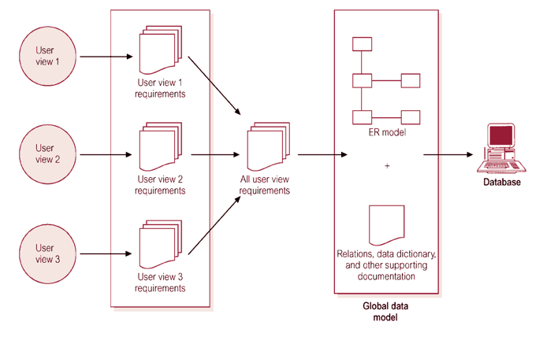
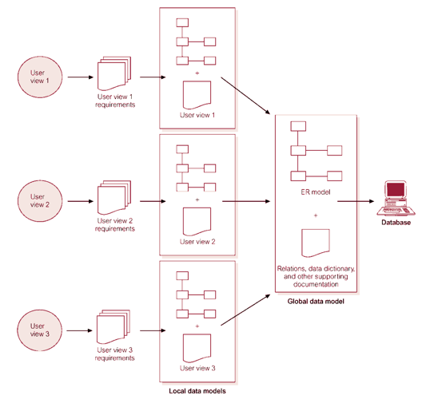
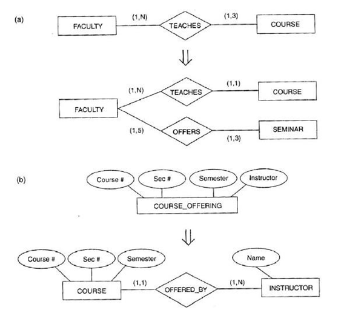
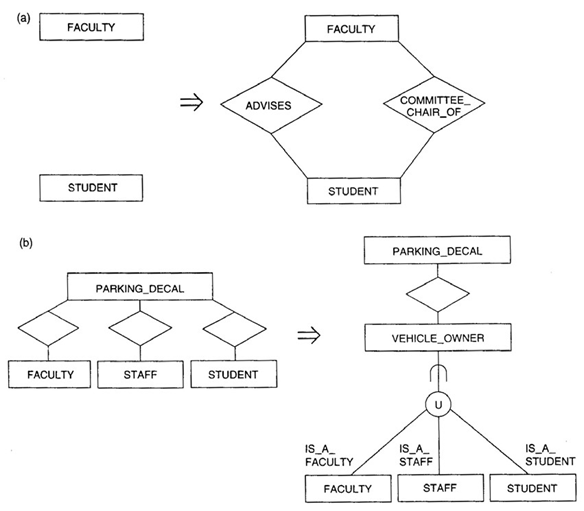
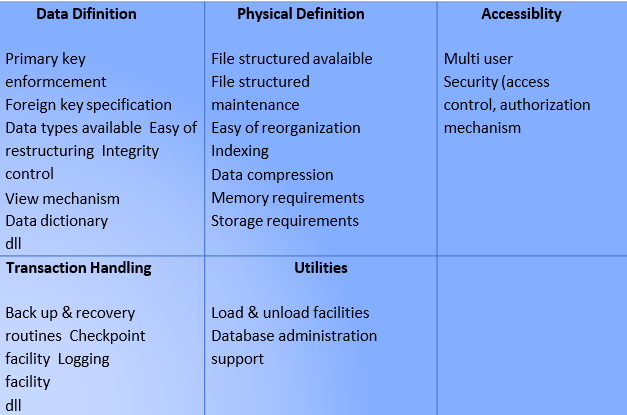

TAHAPAN PROSES DESAIN DATABASE

Tahap 1 : Pengumpulan dan Analisis Kebutuhan Data
Langkah pertama dalam mendesain sebuah aplikasi database adalah memahami dan mengetahui data yang
harus disimpan dalam database, aplikasi apa yang harus dibangun diatasnya, dan jenis operasi apa
yang lebih banyak digunakan dan subyek untuk melakukan persyaratan yang ada, atau dengan kata
lain, kita harus tau apa yang diinginkan pengguna database tersebut.
Aktifitas yang dilakukan :
- Area aplikasi mayor dan kelompok pemakai yang akan menggunakan basis data atau pekerjaan
/ aplikasinya
- Dokumen yang sudah ada yang berhubungan dengan aplikasi dipelajari dan dianalisa.
Dokumen lain seperti police manual, form, report dan struktur organisasi ditinjau
Kembali untuk menentukan dan menguji apakah dokumen-dokumen tersebut berpengaruh
terhadap kumpulan data dan proses spesifikasi.
- Lingkungan operasi saat ini dan rencana penggunaan informasi. Menganalisa tipe transaksi
dan frekuensi penggunaannya dan aliran informasi dalam sistem. Karakteristik geografi
seperti pemakai, transaksi asli, tujuan pelaporan. Data input dan output diperinci.
- Penulisan respon dari kuesioner pemakai potensial untuk mendapatkan informasi yg
berharga
3 Pendekatan dalam manajemem kebutuhan:
- Terpusat (Centrelized)

- View Integration

- Kombinasi Keduanya
Tahap 2 : Desain Konseptual
Informasi dikumpulkan pada saat analisis persyaratan digunakan untuk mengembangkan deskripsi data
tingkat tinggi yang harus disimpan dalam database, bersama dengan batasan yang telah diketahui
untuk menetapkan penyimpanan data tersebut. Langkah ini sering dilakukan dengan menggunkan model
ER. Model ER adalah salah satu dari model data tingkat tinggi, atau semantik, yang digunakan
dalam desain database. Tujuannya adalah menciptakan gambaran sederhana tentang data yang mirip
dengan pemikiran pengguna dan pengembang mengenai data tersebut (orang dan proses yang
dinyatakan dalam data tersebut).
Aktifitas Paralel:
- Desain Skema Konseptual
- Memberikan gambaran yang lengkap dari struktur basis data yaitu arti, hubungan, dan
batasan-batasan.
- Conceptual schema bersifat tetap
- Alat komunikasi antar pemakai basis data, designer, dan analis.
- Harus bersifat: Mampu menyatakan relationship, batasan-batasan, diagram, formal, simple
Strategi:
- Top Down
- Mulai dengan beberapa high level entity type
- Bagi lagi (top down) menjadi beberapa lower-level entity type dan Relationship type

- a. Membangkitkan tipe entiti baru.
- b. Dekomposisi tipe entiti ke dalam dua tipe entiti dan relasi
- Botton Up
- Mulai dengan atribut
- Kelompokkan menjadi entity type & relationship type
- Tambahkan relationship-relationship

- a. Menemukan dan menambah relasi baru.
- b. Menemukan katagori baru (tipe union) dan menghubungkannya.
- Inside Out
- Bentuk khusus dari bottom-up
- Mula-mula ditentukan entity type yang merupakan pusat/bagian terpenting tambahkan
entity type dan relationship lain yang berhubungan satu sama lain
- Desain Transaksi dan Aplikasi
- Pada saat basis data didesain, aplikasi dari transaksi utama harus sudah diketahui
- Transaksi-transaksi baru dapat didefinisikan kemudian
- Tentukan karakteristik dari transaksi dan periksa apakah basis data sudah memuat semua
informasi untuk melaksanakan transaksi
- Transaksi dapat dibagi dalam 3 bagian yaitu: retrieval, update, mixed
- Tahap 2A dan 2B sebaiknya dilaksanakan secara paralel dengan menggunakan umpan balik
agar didapat skema desain dan transaksi yang stabil
Tahap 3 : Pemilihan DBMS
Dalam langkah ini adalah menentukan/memilih DBMS yang akan digunakan untuk mengimplementasikan
desain database dan mengubah konsep desain database menjadi sebuah skema database dalam model
data dari DBMS terpilih. Dalam langkah ini merupakan proses perubahan dari skema ER Diagram
menjadi skema Database Relasional (RDBMS).
Langkah Utama dalam memilih DBMS : (Connoly)
- Lihat informasi DBMS dari referensi
- Buat daftar 2 atau 3 produk
- Evaluasi produk
- Rekomendasi dan buat reportnya
Faktor dalam Pemilihan DBMS :
- Faktor teknis: berhubungan dengan ketepatan DBMS yang dipilih (tipe DBMS : relational,
object relational dll) Struktur penyimpanan, storage, akses path, ketersediaan user
interface dan programmer, bahasa query, dll
- Faktor ekonomi: Biaya Software, biaya Hardware, Biaya pembuatan database dan konversi,
biaya Maintenance, Personal cost ,training, operasi.
- Faktor Organisasi : Struktur organisasi, Personal yang terbiasa dengan sistem yang
terdahulu , Ketersediaan dari service vendor
BEBARAPA FITUR UNTUK EVALUASI DMBS

Tahap 4 : Pemetaan Model Data (Desain Basis Data Logika)
Membuat skema konseptual dan skema eksernal dalam model data dari DBMS terpilih
Proses pemetaan dalam dua bentuk :
- Pemetaan yang Tidak Tergantung pada Sistem (System- Independet Mapping). Pada bentuk ini,
pemetaan tidak mempertimbangkan karakteristik khusus atau kasus khusus yang
diaplikasikan ke implementasi DBMS dari model data.
- Penyesuaian Skema ke DBMS yang Spesifik (Tailoring the Schemas to Specific DBMS ). DBMS
yang berbeda mengimplementasikan model data dengan menggunakan pemodelah khusus. Hasilnya
merupakan pernyataan DDL dari DBMS yang dipilih
Tahap 5 : Desain Fisik
- Proses pemilihan struktur penyimpanan dan jalur akses pada file-file basis data untuk
mencapai penampilan yang terbaik pada bermacam aplikasi.
- Dirancang spesifikasi-spesifikasi untuk basis data yang disimpang yang berhubungan dengan
struktur-struktur penyimpanan fisik, penempatan record dan jalur akses
Beberapa petunjuk dalam pemilihan perancangan basis data secara fisik :
- Waktu Respon
- Waktu transaksi basis data untuk menerima respon selama eksekusi
- Waktu respon dipengaruhi waktu akses basis data untuk data item yang ditunjuk oleh suatu
transaksi
- Penggunaan Ruang Penyimpanan
Jumlah ruang penyimpanan yang digunakan oleh file basis data dan stuktur-struktur jalur
akses.
- Transaction Throughput
Rata-rata jumlah transaksi yang dapat diproses per menit oleh sistem basis data, dan
merupakan parameter kritis dari sistem transaksi (misal : digunakan pada pemesanan
tempat di pesawat, bank, dll).
Tahap 6 : Implementasi Basis Data
- DBA bersama desainer basis data menggunakan pernyataan dalam DDL , SDL (Storage Definition
Language) dari DBMS terpilih digunakan untuk membuat skema basisdata dan file basis data
(kosong).
- Basis data kemudian dipopulasikan dengan data.
- Jika data diubah dari sistem komputerisasi sebelumnya, rutin konversi diperlukan untuk
format kembali data untuk menyimpan ke basis data baru.
- Transaksi basis data harus diimplementasikan dengan aplikasi yang dibuat programmer
- Melakukan uji coba kode porgram dengan perintah DML
- Jika transaksi siap dan data disimpan ke basis data, tahap rancangan dan implementasi
selesai dan tahap operasi dari sistem basis data dimulai.